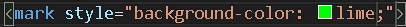

Usando a tag B o texto ficara em negrito ( não semantica )
Já usando a tag STRONG o texto ficará em negrito ( semantica )
Usando a tag I o texto ficara em italico ( não semantica )
Ja usando a tag EM o texto ficara em destaque ( Semantica )
Usando a tag MARK o texto desejado ficara marcado como se fosse usado um marca texto
Para mudar a cor da marcação é utilizado a tag style background color como na imagem a seguir
Para mudar a cor de todas as marcações é necessario adicionar tag style background color como na imagem a seguir

Para criar um texto grande é necessario usar a tag big, ja para o texto pequeno será usada a tag small
Para criar um texto deletado ( um texto que pode sr lido mas não considerado ) é necessario usar a tag del.
Esse texto foi inserido depois de escrito um texto normal para criar um texto inserido use a tag ins.
e para criar um texto sublinhado use a tag u ( não semantica )
Para inserir coisas como x30+10, use a tag sup
Para inserir coisas como H2O, use a tag sub